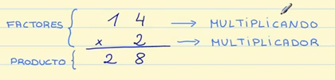

¿Qué son las multiplicaciones?
Las multiplicaciones son operaciones matemáticas que se realizan para calcular el resultado de sumar un número tantas veces como indique el otro número que compone la operación.
Las multiplicaciones son operaciones matemáticas que se realizan para calcular el resultado de sumar un número tantas veces como indique el otro número que compone la operación.
Son todos los números que intervienen en una multiplicación, tanto los factores -multiplicando y multiplicador- como el producto.
Son los números que se multiplican. Los factores se escriben uno debajo del otro. Normalmente se escribe arriba el número mayor, el que vamos a multiplicar, que por eso podemos llamar multiplicando y abajo se escribe el número menor, el que indicaba las veces que se repetía, al que llamamos también multiplicador.
Es el resultado de la multiplicación.